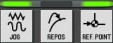
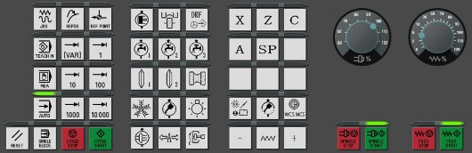
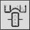
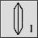
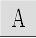

机床供电： 3 ~ 380 V/ 50 Hz
机床功率： 26 KVA
环境温度： 0 ~ 45 ℃
该机床为五轴数控内螺纹磨床，采用西门子 828D 系统，机床中各数控轴定义如下：
砂 轮 架 横 进 给 X 轴
工 作 台 纵 向 移 动 Z 轴
头 架 主 轴 旋 转 C 轴
砂 轮 架 转 盘 回 转 A 轴
滚 压 轮 主 轴 旋 转 SP 轴
头架的回转运动
工作台的纵向运动
砂轮架横进给运动
滚压轮旋转运动
修整器回转运动
机床的基本操作方法
旋转打开机床电箱上的电源总开关，数控系统启动并开始自检，待机床启动完成。首先， 检查急停开关 是否松开， 再打开
使能开关。
选定回参考点方式，在 JOG 手动模式下  进行各轴的回参考点操作，操作的顺序是 Z 轴 -X 轴 -C 轴；选定
（ 例如， 图片中选定 X 轴） 需要回参考点的轴后， 按下图中
“ + ”完成选定轴的回参考点操作。当需要回参考点的轴前面出现 图中所示 标记时，即表示该轴回参考点完成。
A 轴电机采用了绝对值编码器，不需要回参考点。
注意：机床断电后，必须重新进行各轴回参考点操作！！！

图 2-1 （此图片内容仅供参考，以实物为准）
机床开启后，在图 2-1 所示面板中，按下 此键，可控制机床液压泵启动 / 停止。
机床开启后，在图 2-1 所示面板中，按下  AUTO 此键，可控制机床是否进行修整砂轮。
机床开启后，在图 2-1 所示面板中，按下 此键，可控制机床打开或关闭 DRF 插补功能。
机床开启后，在图 2-1 所示面板中，按下 此键，可控制机床启动 / 停止磨削内冷却泵。
机床开启后，在图 2-1 所示面板中，按下 此键，可控制机床启动 / 停止修整冷却泵。
机床开启后，在图 2-1 所示面板中，按下  此键，可控制机床启动 / 停止粗磨砂轮。
机床开启后，在图 2-1 所示面板中，按下 JOG 此键，进行一次手动修整。
机床开启后，在图 2-1 所示面板中，按下 此键，可控制电箱空调的启动或停止。
机床开启后，在图 2-1 所示面板中，按下 此键，可控制机床机床润滑泵启动 / 停止。
机床开启后，在图 2-1 所示面板中，按下 此键，可控制机床内部照明灯的打开与关闭。
机床开启后，在图 2-1 所示面板中，按下 此键，可控制机床内部吸雾装置的打开与关闭。
机床开启后，在图 2-1 所示面板中，按下 此键，可选中 X 轴。
机床开启后，在图 2-1 所示面板中，按下 此键，可选中 Z 轴。
机床开启后，在图 2-1 所示面板中，按下 此键，可选中 C 轴。
机床开启后，在图 2-1 所示面板中，按下  此键，可选中 A 轴。
机床开启后，在图 2-1 所示面板中，按下 此键，可控制机床进行程序对刀功能的操作。
机床在关机操作前，确认各轴进给处于停止状态、各辅助功能（如冷却、液压、主轴等）为关闭状态，然后断电。